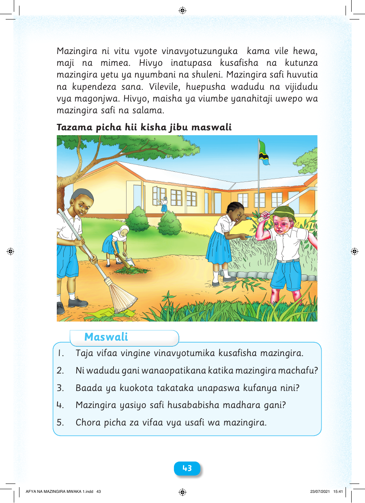

Mazingira ni vitu vyote vinavyotuzunguka kama vile hewa, maji na mimea. Hivyo inatupasa kusafisha na kutunza mazingira yetu ya nyumbani na shuleni. Mazingira safi huvutia na kupendeza sana. Vilevile, huepusha wadudu na vijidudu vya magonjwa. Hivyo, maisha ya viumbe yanahitaji uwepo wa mazingira safi na salama. Tazama picha hii kisha jibu maswali Maswali 1. Taja vifaa vingine vinavyotumika kusafisha mazingira. 2. Ni wadudu gani wanaopatikana katika mazingira machafu? 3. Baada ya kuokota takataka unapaswa kufanya nini? 4. Mazingira yasiyo safi husababisha madhara gani? 5. Chora picha za vifaa vya usafi wa mazingira. 4433 AFYA NA MAZINGIRA MWAKA 1.indd 43 23/07/2021 15:41